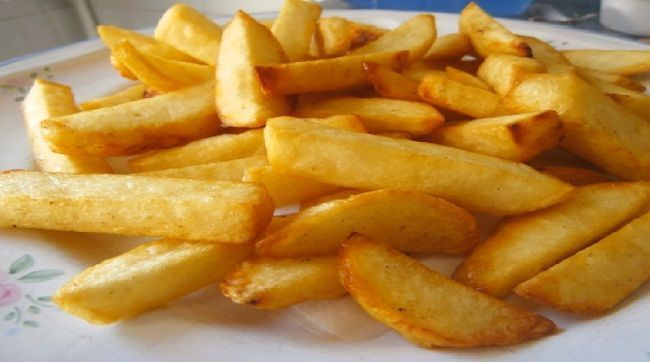

Receta para prepara papas fritas
Hacer papas fritas es muy facil. Solo hay que saber cómo y, hay que conocer una serie de pasos. Lo primero es su corte. Dependiendo de cómo cortemos la patata, quedará de una manera u otra. Lo segundo a tener en cuenta, es su forma de fritura. Hay una técnica en concreto llamada «fritura a la francesa» que no es más que cocinarla en dos fases diferentes. Vamos a verlo con mayor detalle. Vamos a hacer unas autenticas patatas fritas crujientes y doradas.
Ingredientes para una porción de 4 personas:
- 3 papas.
- Aceite.
- Sal al gusto.
Pasos:
- Lo primero a tener en cuenta,como ya decía, es el corte. El grosor del mismo sí importa. Y mucho. Pelamos la patata y la cortamos en forma de bastoncitos. El tamaño del mismo debe ser de alrededor de 1 centímetro de grosor. Esté es el tamaño estandar y más común en una patata frita. Con él, nos aseguramos que tenga una carcasa crujiente y un interior blandito y sabroso.
- El siguiente paso, es lavar las patatas. Con ello, eliminaremos el exceso almidón que contienen y conseguiremos que, no se peguen entre sí y que nos queden más crujientes. Así que las colocamos sobre una escurridera y las lavamos con abundante agua.
- Les escurrimos bien el exceso de agua y procedemos a freír las patatas. Y lo vamos a hacer en dos fases muy diferenciadas entre sí. En la primera,ponemos en una sartén o freidora abundante aceite de oliva a fuego medio; el suficiente como para que cubra por completo las patatas, y las metemos dentro. Dejamos que vayan cocinándose cerca de 10 minutos,dependiendo de la dureza de la patata. Cuando esté blanda, la retiramos del aceite y las dejamos mínimo 30 minutos para que se enfríen. Este tiempo de reposo, es crucial así que, si tienes tiempo, no te lo saltes.
- Pasado este tiempo, calentamos el aceite al máximo y metemos en él las patatas. Cuando estén doradas y a nuestro gusto, las sacamos. Alrededor de dos minutos. Las ponemos sobre papel absorbente y les echamos la sal.
- Y ahora, ¡a comer!

Puedes dar click aquí para ver un vídeo con la preparación de esta comida paso a paso.